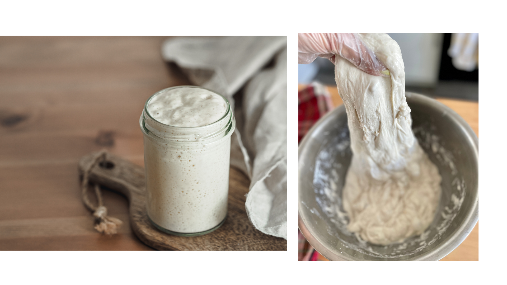

Første aktivitet gennemført
TRIN 02 · NU ER DET VENTETID
Du har blandet din første surdej
Godt begyndt. Du behøver ikke gøre mere lige nu — lad blandingen få tid, og kom tilbage til den første fodring.
Vent og observer
CA. 24 TIMER · STUETEMPERATUR
Giv den en rolig plads
Lad glasset stå omkring 21 °C med låget løst på. Det skal ikke lukkes lufttæt. Du kan sætte en lille markering ved niveauet, hvis du vil følge væksten.
Det skal du kigge efter
Ingen synlig aktivitet kan være normalt. Små bobler eller lidt vækst kan også være normalt. Du skal ikke ændre planen på grund af én observation.

NÆSTE AKTIVITET · EFTER CA. 24 TIMER
Din første fodring
Du beholder 50 g surdej og giver den frisk hvidt hvedemel og vand. Vi viser dig hvordan på næste trin.
Se næste trin: Første fodringBegyndt er ikke det samme som bageklar
Din blanding er starten på en kultur. Den er endnu ikke moden til bagning — heller ikke hvis den bobler allerede nu.
Er du i tvivl om din surdej?
Der behøver ikke ske noget synligt endnu. Se, hvad der er normalt, og hvornår du skal starte forfra.
Få hjælp til din surdej